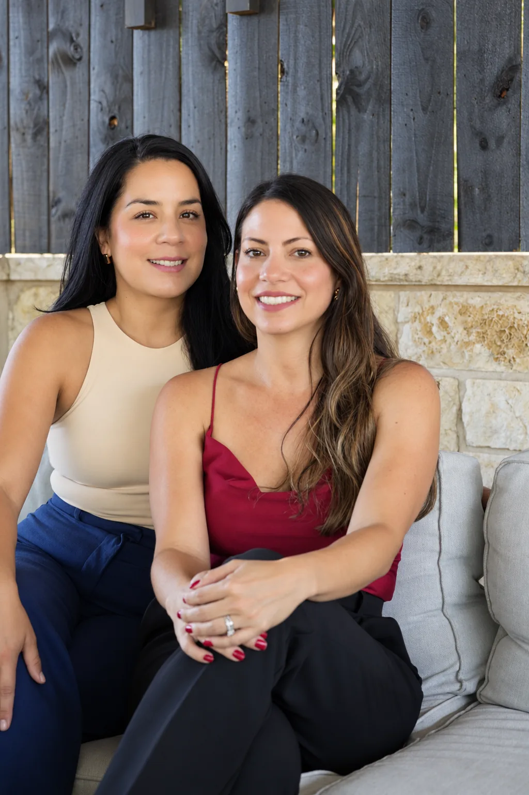

Listen before making
Every useful idea begins with understanding the business, the people and the actual challenge—not a preselected tactic.
Compass Media is a women-led, bilingual creative agency helping local and national brands find a sharper direction—and bring it to life.

Compass began with a simple belief: brands should not have to choose between strategic thinking and hands-on execution.
We stay close to our clients, learn what makes their businesses distinct and build creative systems that work in the real world—from a first logo to an always-on social presence.
See what we makeEvery useful idea begins with understanding the business, the people and the actual challenge—not a preselected tactic.
A brand should feel like one clear thought across its identity, website, social content, advertising and video.
We value clear advice, practical plans and creative work that earns its place instead of adding more noise.
Strategy without distance. Creative without ego. A partner that keeps your brand moving forward.
Compass brings together strategic, design, social, advertising, production and digital expertise around each assignment. Clients get a connected team, direct communication and work shaped around the problem—not an oversized agency process.